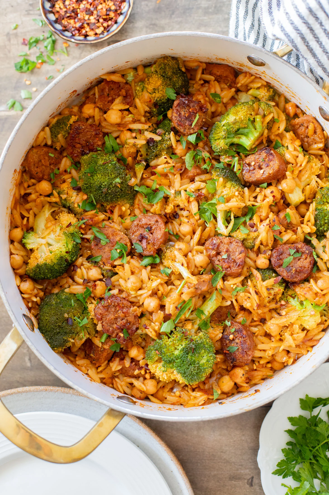

<!DOCTYPE html>
<html lang=""en>
    <head> 
        <meta charset="UTF-8">
        <title>Vegan Orzo Shillet</title>
    </head>
</html>

<body>
    <a href="../index.html">Home</a>
    <h1>Easy and delicious Vegan Orzo Shillet</h1>
    
    <h3>This is a hearty, easy to make dish that you can mealprep for the week</h3>
    <p>The combination of this fiber-packed pasta with meaty chunks of sausage and broccoli will deliver a complete meal. Orzo brings a unique texture to this dish. Feel free to add any kind of vegan meat. We prefer it with <strong>Beyond sausage!</strong></p>

    <h3>Ingredients</h3>
        <ul>
            <li>2 tbsp oil</li>
            <li>1 vegan sausage (cut in circles)</li>
            <li>1 small onion diced</li>
            <li>1 tsp garlic powder</li>
            <li>1 tsp italian seasoning</li>
            <li>1/2 tsp paprika</li>
            <li>1/2 tsp pepper</li>
            <li>2 cups veggie broth</li>
            <li>1 cup dry orzo oil</li>
            <li>broccoli florets</li>
            <li>1 can chickpeas</li>
            <li>1 tbsp tomato paste</li>
        </ul>

     <h3>Steps</h3>
        <ol>
            <li>Heat oil and saute the sausage.</li>
            <li>Sauté the onion and the dry seasonings.</li>
            <li>Add the tomato paste.</li>
            <li>Pour the broth and bring to a boil.</li>
            <li>After that, add the chickpeas and the orzo.</li>
            <li>Let it simmer for 10 more minutes.</li>
            <li>Then add the sausage and the broccoli.</li>
            <li>Finally, let it simmer for 15 more minutes.</li>
        </ol>

    <p>And there you go! You can enjoy this delicious dish with some bread.</p>
    <p>I personally like it with some <a href="./garlic-bread.html">garlic butter toasted bread</a>.</p>


</body>